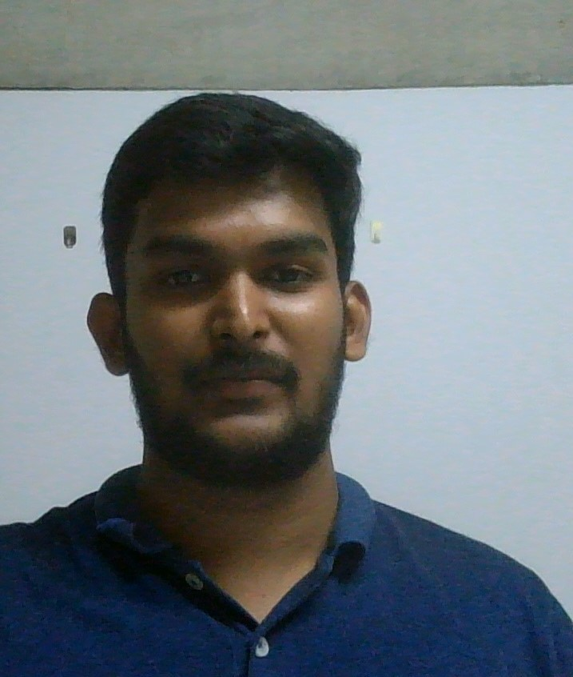

CHANDAN TEJA
SDE 2 at Walmart Global Tech India (from July,2022)
Master of Technology,
International Institute of Information Technology, Bangalore
Email: Magham [dot] Teja [at] iiitb [dot] ac [dot] in
Email(Personal): chandantejaa [at] gmail [dot] com

About me
I am currently working as Software Engineer-2 at Walmart Global Tech India.
Before that, I completed my Masters from
IIIT-Bangalore in Computer Science and Engineering in 2022.
Prior to that, I worked as Junior Software Engineer with Client Broadcom Communication Technologies for a period of Oct,2017 to May,2019.